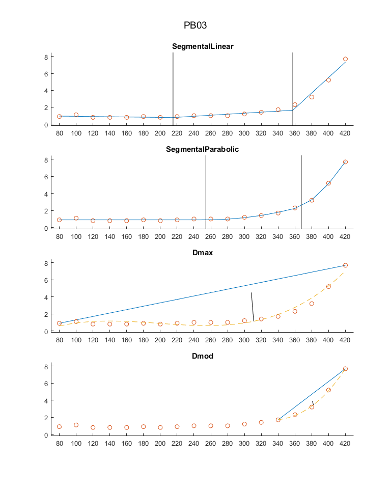
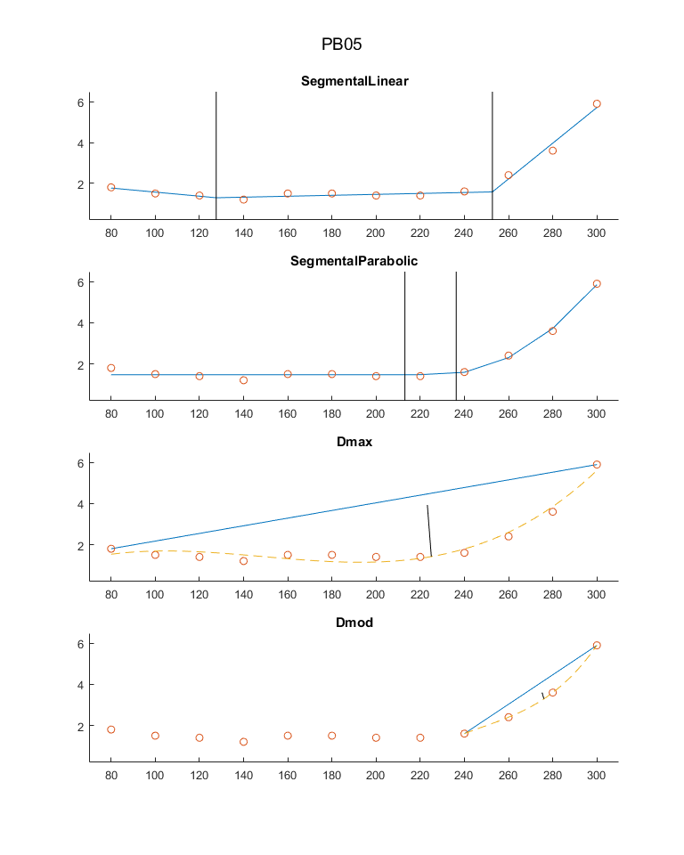

Contents
clearvars;
close all;
files
datafile = 'Stufentest_laktat_leistung.csv';
import
data = importLactate(datafile);
data
subs = {'PB03' ; 'PB05' ; 'PB06' ; 'PB08' ; 'PB09'};
steps = data(1,:)';
PB03 = data(3,:)'; PB03 = PB03(~isnan(PB03));
PB05 = data(5,:)'; PB05 = PB05(~isnan(PB05));
PB06 = data(6,:)'; PB06 = PB06(~isnan(PB06));
PB08 = data(8,:)'; PB08 = PB08(~isnan(PB08));
PB09 = data(9,:)'; PB09 = PB09(~isnan(PB09));
subj_data = {PB03 , PB05 , PB06 , PB08 , PB09}';
Used_LT = [380 ; 240 ; 260 ; 200 ; 220];
estimate thresholds
LT1 = zeros(size(subj_data));
Mader = zeros(size(subj_data));
SegLin = zeros(size(subj_data));
SegPara = zeros(size(subj_data));
Guidetti = zeros(size(subj_data));
Dickhuth = zeros(size(subj_data));
Dmax = zeros(size(subj_data));
Dmod = zeros(size(subj_data));
for i = 1:length(subj_data)
f = figure('Name',subs{i});
set(f, 'Units', 'normalized', 'Position', [0.1, 0.1, 0.4, 0.8]);
LT1(i) = lacT1(steps, subj_data{i});
Mader(i) = maderLT(steps, subj_data{i});
Guidetti(i) = iat(steps, subj_data{i});
Dickhuth(i) = dick(steps, subj_data{i});
SegLin(i) = twoLTlin(steps, subj_data{i});
SegPara(i) = twoLTpara(steps, subj_data{i});
Dmax(i) = dmax(steps, subj_data{i});
Dmod(i) = dmod(steps, subj_data{i});
suptitle(subs{i});
end
 
results
mean = mean([Mader,Guidetti,Dickhuth,SegLin,SegPara,Dmax,Dmod],2);
std = std([Mader,Guidetti,Dickhuth,SegLin,SegPara,Dmax,Dmod],0,2);
Mader = round(Mader);
Guidetti = round(Guidetti);
Dickhuth = round(Dickhuth);
SegLin = round(SegLin);
SegPara = round(SegPara);
Dmax = round(Dmax);
Dmod = round(Dmod);
mean_minus_std = round(mean - std);
mean_plus_std = round(mean + std);
mean = round(mean);
std = round(std);
fits = cell(size(subj_data));
for i = 1:length(subj_data)
if (mean_minus_std(i) <= Used_LT(i)) && (mean_plus_std(i) >= Used_LT(i))
fits{i} = 'x';
else
fits{i} = '';
end
end
T = table(Used_LT,Mader,Guidetti,Dickhuth,SegLin,SegPara,Dmax,Dmod,mean,std,mean_minus_std,mean_plus_std,fits,'RowNames',subs);
disp(T);
Used_LT Mader Guidetti Dickhuth SegLin SegPara Dmax Dmod mean std mean_minus_std mean_plus_std fits
_______ _____ ________ ________ ______ _______ ____ ____ ____ ___ ______________ _____________ ____
PB03 380 388 360 380 357 368 311 382 364 26 338 390 'x'
PB05 240 283 260 272 253 236 225 276 258 21 236 279 'x'
PB06 260 267 220 251 258 259 225 262 249 19 230 268 'x'
PB08 200 215 180 203 219 214 194 224 207 16 191 222 'x'
PB09 220 220 200 212 218 223 195 226 213 12 202 225 'x'
algorithms
function pLT = maderLT(power, lactate)
pLT = NaN;
for i = 2:length(lactate)
if ((lactate(i)>=4) && (lactate(i-1)<=4))
pLT = interp1(lactate(i-1:i), power(i-1:i), 4);
break;
end
end
end
function pLT = iat(power, lactate)
pLT = NaN;
for i = 2:length(lactate)-1
ld = lactate(i) - lactate(i-1);
if ld >= 0.5
if (lactate(i+1) - lactate(i)) >= ld
pLT = power(i);
break;
end
end
end
end
function pLT = dick(power, lactate)
[~, start] = lacT1(power, lactate);
pLT = interp1(lactate(start:end), power(start:length(lactate)), lactate(start)+1.5);
end
function pLT = dmod(power, lactate)
[~, start] = lacT1(power, lactate);
pLT = dmaxmod(power, lactate, start);
end
function [pLT, index] = lacT1(power, lactate)
for i = 2:length(lactate)
if lactate(i)-lactate(i-1) >= 0.4
pLT = power(i-1);
index = i-1;
break;
end
end
end
function pLT = dmax(power, lactate)
index = 1;
pLT = power(index);
d = 0;
Q1 = [power(1) ; lactate(1)];
Q2 = [power(length(lactate)) ; lactate(end)];
[poly, ~, mu] = polyfit(power(1:length(lactate)), lactate, 3);
for i = power(1):power(length(lactate))
dLP = distLP(Q1, Q2, [i ; polyval(poly, i, [], mu)]);
if dLP > d
d = dLP;
pLT = i;
end
end
ax = subplot(4,1,3);
title('Dmax');
hold on;
plot([power(1) power(length(lactate))], [lactate(1) ; lactate(end)]);
plot(power(1:length(lactate)), lactate, 'o');
plot(power(1):power(length(lactate)), polyval(poly, power(1):power(length(lactate)), [], mu), '--');
P = [pLT ; polyval(poly, pLT, [], mu)];
xl = [power(1)-10 power(length(lactate))+10];
yl = [min(lactate)-1 max(lactate)*1.1];
xlim(xl); ylim(yl);
r = get(ax, 'DataAspectRatio');
u = Q2 - Q1; n = [u(2) / r(2) ; -u(1) / r(1)];
LP = P - distLP(Q1, Q2, P)*n/norm(n);
plot([P(1) ; LP(1)], [P(2) ; LP(2)],'Color','black');
xticks(power(1:length(lactate)));
end
function pLT = dmaxmod(power, lactate, start)
index = 1;
pLT = power(index);
d = 0;
Q1 = [power(start) ; lactate(start)];
Q2 = [power(length(lactate)) ; lactate(end)];
[poly, ~, mu] = polyfit(power(start:length(lactate)), lactate(start:end), 3);
for i = power(start):power(length(lactate))
dLP = distLP(Q1, Q2, [i ; polyval(poly, i, [], mu)]);
if dLP > d
d = dLP;
pLT = i;
end
end
ax = subplot(4,1,4);
title('Dmod');
hold on;
plot([power(start) power(length(lactate))], [lactate(start) ; lactate(end)]);
plot(power(1:length(lactate)), lactate, 'o');
plot(power(start):power(length(lactate)), polyval(poly, power(start):power(length(lactate)), [], mu), '--');
P = [pLT ; polyval(poly, pLT, [], mu)];
xl = [power(1)-10 power(length(lactate))+10];
yl = [min(lactate)-1 max(lactate)*1.1];
xlim(xl); ylim(yl);
r = get(ax, 'DataAspectRatio');
u = Q2 - Q1; n = [u(2) / r(2) ; -u(1) / r(1)];
LP = P - distLP(Q1, Q2, P)*n/norm(n);
plot([P(1) ; LP(1)], [P(2) ; LP(2)],'Color','black');
xticks(power(1:length(lactate)));
end
function d = distLP(Q1, Q2, P)
d = abs(det([Q2-Q1,P-Q1]))/norm(Q2-Q1);
end
function pLT = twoLTlin(power, lactate)
x0 = [lactate(1) ; 0 ; 0 ; 0 ; power(2) ; power(3)];
lb = [lactate(1)-1 ; -1 ; -1 ; -1 ; power(2) ; power(3)];
ub = [2*lactate(1) ; 1 ; 5 ; 10 ; power(length(lactate)-2) ; power(length(lactate)-1)];
A = zeros(length(lb));
A(1,5) = 1;
A(1,6) = -1;
b = zeros(size(lb));
b(1) = power(1)-power(2);
fun = @(x) mean((funcValues(@linLa, power(1:length(lactate)), x) - lactate).^2);
options = optimset('Display', 'off') ;
x = fmincon(fun, x0, A, b, [], [], lb, ub, [], options);
pLT = x(6);
ax = subplot(4,1,1);
title('SegmentalLinear');
hold on;
p = power(1:length(lactate));
p = [p(p<x(5)) ; x(5) ; p(p>x(5)&p<x(6)) ; x(6) ; p(p>x(6))];
plot(p, funcValues(@linLa, p, x));
plot(power(1:length(lactate)), lactate, 'o');
xl = [power(1)-10 power(length(lactate))+10];
yl = [min(lactate)-1 max(lactate)*1.1];
xlim(xl); ylim(yl);
plot([x(5) x(5)], get(ax,'YLim'),'Color','black');
plot([x(6) x(6)], get(ax,'YLim'),'Color','black');
xticks(power(1:length(lactate)));
end
function pLT = twoLTpara(power, lactate)
x0 = [lactate(1) ; 1 ; 1 ; power(2) ; power(3)];
lb = [lactate(1)-1 ; 10^-4 ; 10^-4 ; power(2) ; power(3)];
ub = [2*lactate(1) ; 0.01 ; 0.01 ; power(length(lactate)-2) ; power(length(lactate)-1)];
A = zeros(length(lb));
A(1,4) = 1;
A(1,5) = -1;
b = zeros(size(lb));
b(1) = power(1)-power(2);
fun = @(x) mean((funcValues(@paraLa, power(1:length(lactate)), x) - lactate).^2);
options = optimset('Display', 'off') ;
x = fmincon(fun, x0, A, b, [], [], lb, ub, [], options);
pLT = x(5);
ax = subplot(4,1,2);
title('SegmentalParabolic');
hold on;
plot(power(1:length(lactate)), funcValues(@paraLa, power(1:length(lactate)), x));
plot(power(1:length(lactate)), lactate, 'o');
xl = [power(1)-10 power(length(lactate))+10];
yl = [min(lactate)-1 max(lactate)*1.1];
xlim(xl); ylim(yl);
plot([x(4) x(4)], get(ax,'YLim'),'Color','black');
plot([x(5) x(5)], get(ax,'YLim'),'Color','black');
xticks(power(1:length(lactate)));
end
function values = funcValues(fun, power, x)
values = zeros(size(power));
for i = 1:length(power)
values(i) = fun(power(i), x);
end
end
function la = linLa(power, x)
p = x(1); a1 = x(2); a2 = x(3); a3 = x(4) ; d1 = x(5); d2 = x(6);
if power <= d1
la = p + a1*power;
elseif power <= d2
la = p + a1*d1 + a2*(power-d1);
else
la = p + a1*d1 + a2*(d2-d1) + a3*(power-d2);
end
end
function la = paraLa(power, x)
p = x(1); a1 = x(2); a2 = x(3); d1 = x(4); d2 = x(5);
if power <= d1
la = p;
elseif power <= d2
la = p + a1*(power-d1)^2;
else
la = p + a1*(power-d1)^2 + 2*a1*(d2-d1)*(power-d2) + a2*(power-d2)^2;
end
end